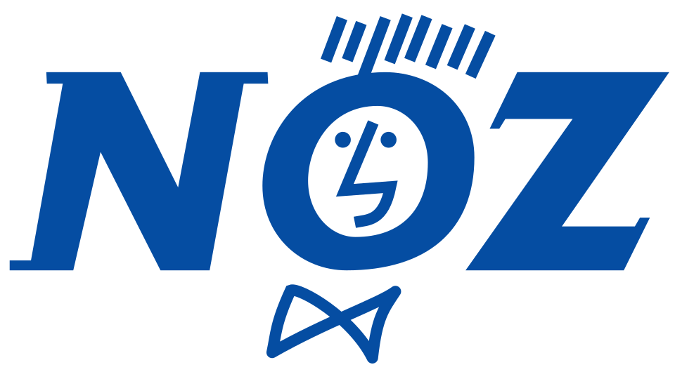
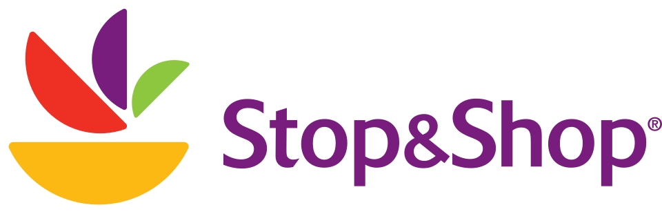

홈 > 브랜드 매거진 > Relay
Relay
를레(Relay)는 공항·기차역에 입점하는 신문·잡지·여행 편의 소매 브랜드다. 1852년 기원을 둔 프랑스의 라가르데르 트래블 리테일이 운영하며 전 세계 여행 거점에 매장을 둔다.
산업 분야 리테일·커머스 · 공개 등급 자료 기반 · 브랜드 평가 4.1 ★

한눈에 보는 브랜드
를레(Relay)는 공항·기차역에 입점하는 신문·잡지·여행 편의 소매 브랜드다. 1852년 기원을 둔 프랑스의 라가르데르 트래블 리테일이 운영하며 전 세계 여행 거점에 매장을 둔다.
브랜드 관점
를레는 공항·역의 신문·편의 소매를 대표하는 라가르데르 트래블 리테일의 글로벌 브랜드다. 설립·운영 주체, 업태, 시장 포지션을 함께 보면 리테일·커머스 안에서의 위치가 또렷해진다.
시작과 성장
1852년 루이 아셰트가 시작한 역내 서점 사업(렐레 아슈)에 뿌리를 둔다. 현재 라가르데르 트래블 리테일이 운영하며 27개국 1,100여 매장을 둔 글로벌 여행 소매 체인이다.
브랜드 아이덴티티
여행 소매 매장 릴레이는 상징적인 빨간색 매장 전면을 핵심 시각 요소로 유지하며, 신세대 콘셉트에서는 협력 브랜드를 노출하는 회색 띠를 빨강과 결합한다. 공항과 기차역 매장은 유연한 진열 구조, 지역 상품 전용 공간, 매대별로 구분된 디자인, 매장 화면을 통한 디지털 연출로 구성된다.
제품과 서비스
신문·잡지·도서와 여행 편의 상품을 소매한다. 공항·기차역 입점 매장이 핵심이다.
현재 상태
타임라인
정리된 연도형 이벤트가 없습니다.
BI/CI 변천사
함께 읽을 브랜드

리테일·커머스 · 자료 기반Noz노즈(Noz)는 파산·과잉재고 상품을 매입해 저가로 되파는 프랑스의 재고처리 할인 소매 체인이다.

리테일·커머스 · 자료 기반Stop & Shop스톱 앤 숍(Stop & Shop)은 1914년 미국 매사추세츠에서 시작한 슈퍼마켓 체인이다. 미국 북동부를 대표하는 식료품 체인으로, 네덜란드 아홀드 델헤이즈(Ah...
 리테일·커머스 · 자료 기반롯데백화점
리테일·커머스 · 자료 기반롯데백화점롯데백화점은 롯데쇼핑이 운영하는 대한민국의 대표 백화점 브랜드다. 1979년 서울 소공동 본점을 열었으며 국내 백화점 업계 1위로 최다 점포망을 갖췄다.
 리테일·커머스 · 자료 기반까르푸
리테일·커머스 · 자료 기반까르푸까르푸(Carrefour)는 유럽 최초로 하이퍼마켓 형태를 도입한 프랑스의 다국적 대형 유통업체이다.
 리테일·커머스 · 자료 기반마이크로소프트 스토어
리테일·커머스 · 자료 기반마이크로소프트 스토어마이크로소프트 스토어(Microsoft Store)는 마이크로소프트가 운영한 리테일 매장 체인이다.
Bo
Boerenbond
리테일·커머스 · 자료 기반Boerenbond부런본드(Boerenbond)는 1890년 설립된 벨기에 가톨릭 농민조직에 뿌리를 둔, 정원·농업·반려동물·잡화를 취급하는 소매 브랜드이다.
 리테일·커머스 · 자료 기반CAP
리테일·커머스 · 자료 기반CAP카프마르크트(CAP, CAP-Markt)는 1999년 독일에서 시작한 사회적 슈퍼마켓 체인이다. 장애인 고용을 핵심으로 하는 동네형 슈퍼마켓으로, 명칭은 'handi...
 리테일·커머스 · 자료 기반Dollarama
리테일·커머스 · 자료 기반Dollarama달러라마(Dollarama)는 캐나다 최대의 1~5달러 균일가 저가 소매 체인이다.